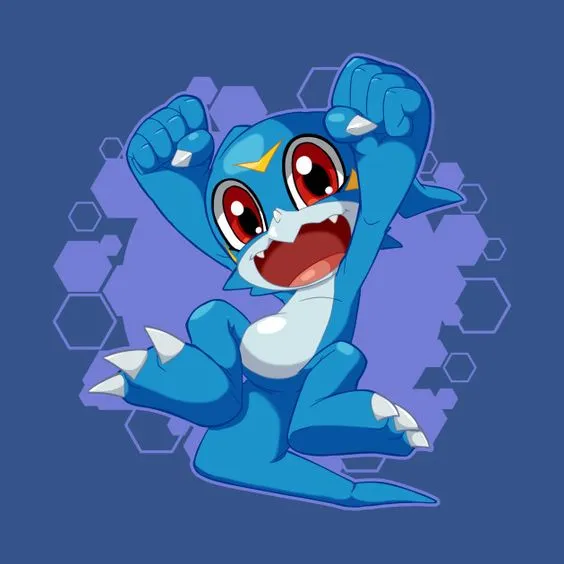
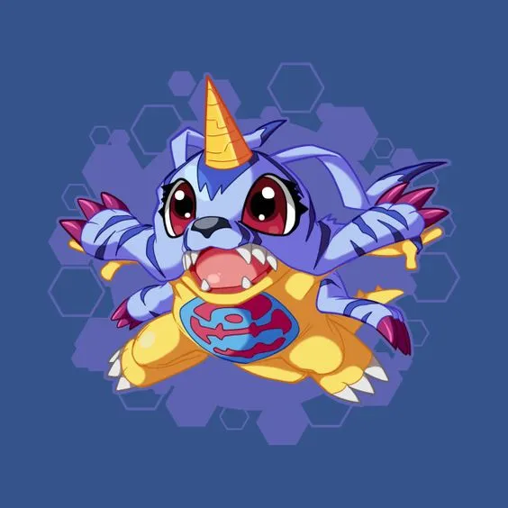

<link rel="shortcut icon" href="./resources/digi-logo.webp"/>
<main>
  <footer>
    <button class="is-zap is-big" aria-label="fav"></button>
</footer>
    <section>
        <div class="cards">
            <article>
              
              <h2>Veemon <span>30</span></h2>
              <div class="choice nope">NOPE</div>
              <div class="choice like">LIKE</div>
            </article>
      
            <article>
              
              <h2>Gabumon <span>45</span></h2>
              <div class="choice nope">NOPE</div>
              <div class="choice like">LIKE</div>
            </article>
            <span>
              No hay más digimons cerca de ti...<br />
              Vuelve a intentarlo más tarde
            </span>
          </div>
          
    </section>
    <footer>
            <button class="is-remove is-big" aria-label="remove"></button>
            <button class="is-fav is-big" aria-label="fav"></button>
    </footer>
</main>

<style>
    *,*::before, *::after {
    box-sizing: border-box;
    margin: 0;
    padding: 0;
}
html {
    font-size: 62.5%;
}

body {
    font-family: system-ui, -apple-system, BlinkMacSystemFont, 'Segoe UI', Roboto, Oxygen, Ubuntu, Cantarell, 'Open Sans', 'Helvetica Neue', sans-serif;
    display: grid;
    place-content: center;
    min-height: 100vh;
    overflow: hidden;
    user-select: none;
    background: #e5e5e5;
}
/*
.white-bkg {
    position: absolute;
    background: #f6f6f6;
    inset: 0;
    z-index: -10;
}

.shadow{
  filter: drop-shadow(0 0 10px rgba(0, 0, 0, 0.3));
}
*/
main {
    background: url(./resources/digivice.webp) no-repeat;
    background-size: contain;
    width: 100vh;
    height: 100vh;
    display: flex;
    filter: drop-shadow(0 0 1px rgba(0, 0, 0, 0.3));
    position: relative;
    justify-content: center;
    align-items: center;
}

section {
  width: 29.8%;
    height: 29.8%;
    border: 2px solid rgba(0, 0, 0, 0.3);
    border-radius: 10px;
    background: #f6f6f6;
    display: flex;
    flex-direction: column;
    overflow: hidden;
    position: relative;
  
}
/*
footer {
    display: flex;
    flex-direction: column;
    gap: 1px;

    & button {
      background: url('./resources/tinder-icons.webp') no-repeat;
      background-position: 0px 0px;
      background-size: 175px;
      height: 32px;
      width: 32px;
      border-radius: 50%;
      border: 0;
      cursor: pointer;
      transition: scale .3s ease;

      &:hover {
        scale: 1.4;
      }

      &.is-big {
        background-size: 250px;
        width: 120px;
        height: 58px;
      }

      &.is-remove {
        background-position: -119px 0;
      }

      &.is-fav {
        background-position: -12.5px 0;
      }
    }
  }
*/

footer {
  
  flex-basis: 29.8%;
    height: 30.8%;
    display: flex;
    flex-direction: column;
    justify-content: space-around;
    align-items: center;
    margin-left: 3%;
    gap: 45%;
    
  & button {
    background: url(./resources/digiIconsPro.webp) no-repeat;
    background-size: 220px;
    border-radius: 50%;
    border: 0;
    cursor: pointer;
    transition: scale .3s ease;
    margin: 1px 0px 1px 4px;

      &:hover {
        scale: 1.2;
        width: 68px;
      }

      &.is-big {
        background-position: -168px -3px;
    background-size: 300px;
    width: 80px;
    height: 54px;
    margin-bottom: 3px;
    margin-right: 1px;
    margin-top: 1.5px;
    filter: contrast(0.9);

      }
      &.is-remove{
        background-position: -48px -5px;
      }
      &.is-zap {
        background-position: -172px -3px;
    background-size: 425px;
    height: 82;
    width: 82px;
    margin-right: 43%;
    margin-top: 3px;
      }
  }
}
.cards {
    position: relative;
    margin: 0 auto;
    height: 100%;
    width: 100%;
    &>span {
      display: grid;
      place-content: center;
      color: #777;
      font-size: 14px;
      text-align: center;
      height: 100%;
      z-index: -1;
    }

    & article {
      border-radius: 8px;
      box-shadow: 0 0 10px rgba(0, 0, 0, .3);
      cursor: grab;
      overflow: hidden;
      position: absolute;
      inset: 0;
      width: 100%;
      height: 100%;
      z-index: 2;

      &.go-left {
        transform: translateX(-150%) rotate(-20deg) !important;
      }

      &.go-right {
        transform: translateX(150%) rotate(20deg) !important;
      }

      &.go-left,
      &.go-right {
        transition: transform .5s ease, rotate .3s ease;
      }

      &.reset {
        transition: transform .3s ease;
        transform: translateX(0) !important;
      }

      & .choice {
        border-radius: 8px;
        color: black;
        border: 4px solid;
        z-index: 9999;
        position: absolute;
        top: 15px;
        right: 50px;
        opacity: 0;
        font-size: 18px;
        font-weight: bold;
        text-shadow: 0 0 10px rgba(0, 0, 0, .3);
        width: fit-content;
        &.nope {
          border-color: #ff6e63;
          color: #ff6e63;
          transform: rotate(15deg);
          right: 10px;
        }

        &.like {
          border-color: #63ff68;
          color: #63ff68;
          left: 15px;
          transform: rotate(-15deg);
        }
      }

      & img {
        width: 100%;
        height: 100%;
        object-fit: cover;
        filter: drop-shadow(0 0 10px rgba(0, 0, 0, 0.3));
      }

      & h2 {
        color: white;
        position: absolute;
        inset: 0;
        display: flex;
        align-items: flex-end;
        height: 100%;
        width: 100%;
        padding: 16px;
        z-index: 3;
        background: linear-gradient(to top,
            #00000088 20%,
            transparent 40%);
      }

      & span {
        margin-left: 6px;
        font-size: 18px;
        line-height: 1.4;
        font-weight: 400;
      }
    }

  
}
</style>

<script>
  const DECISION_THRESHOLD = 240

  let isAnimating = false
  let pullDeltaX = 0 // distance from the card being dragged

  function startDrag(event) {
    if (isAnimating) return

    // get the first article element
    const actualCard = event.target.closest('article')
    if (!actualCard) return

    // get initial position of mouse or finger
    const startX = event.pageX ?? event.touches[0].pageX

    // listen the mouse and touch movements
    document.addEventListener('mousemove', onMove)
    document.addEventListener('mouseup', onEnd)

    document.addEventListener('touchmove', onMove, { passive: true })
    document.addEventListener('touchend', onEnd, { passive: true })

    function onMove(event) {
      // current position of mouse or finger
      const currentX = event.pageX ?? event.touches[0].pageX

      // the distance between the initial and current position
      pullDeltaX = currentX - startX

      // there is no distance traveled in X axis
      if (pullDeltaX === 0) return

      // change the flag to indicate we are animating
      isAnimating = true

      // calculate the rotation of the card using the distance
      const deg = pullDeltaX / 20

      // apply the transformation to the card
      actualCard.style.transform = `translateX(${pullDeltaX}px) rotate(${deg}deg)`

      // change the cursor to grabbing
      actualCard.style.cursor = 'grabbing'

      // change opacity of the choice info
      const opacity = Math.abs(pullDeltaX) / 100
      const isRight = pullDeltaX > 0

      const choiceEl = isRight
        ? actualCard.querySelector('.choice.like')
        : actualCard.querySelector('.choice.nope')

      choiceEl.style.opacity = opacity
    }

    function onEnd(event) {
      // remove the event listeners
      document.removeEventListener('mousemove', onMove)
      document.removeEventListener('mouseup', onEnd)

      document.removeEventListener('touchmove', onMove)
      document.removeEventListener('touchend', onEnd)

      // saber si el usuario tomo una decisión
      const decisionMade = Math.abs(pullDeltaX) >= DECISION_THRESHOLD

      if (decisionMade) {
        const goRight = pullDeltaX >= 0

        // add class according to the decision
        actualCard.classList.add(goRight ? 'go-right' : 'go-left')
        actualCard.addEventListener('transitionend', () => {
          actualCard.remove()
        })
      } else {
        actualCard.classList.add('reset')
        actualCard.classList.remove('go-right', 'go-left')

        actualCard.querySelectorAll('.choice').forEach(choice => {
          choice.style.opacity = 0
        })
      }

      // reset the variables
      actualCard.addEventListener('transitionend', () => {
        actualCard.removeAttribute('style')
        actualCard.classList.remove('reset')

        pullDeltaX = 0
        isAnimating = false
      })

      // reset the choice info opacity
      actualCard
        .querySelectorAll(".choice")
        .forEach((el) => (el.style.opacity = 0));
    }
  }

  document.addEventListener('mousedown', startDrag)
  document.addEventListener('touchstart', startDrag, { passive: true })
</script>